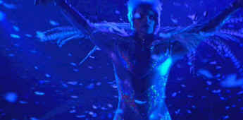

Velvet Goldmine/B,B
|
| Miramax/1998/119m/WS
1.85 |
The seventies glam-rock era passed me by without so
much as a glance and after seeing Velvet Goldmine, an audacious compilation of defining
images of an era, I still don't get it. The fascinating montage work and intense editing by writer
and director Todd Haynes is at times mesmerizing and the pace of Velvet Goldmine is
breathtaking, but the characters totally fail me emotionally.
 |
|
Jonathan Rhys-Myers is Brian Slade.©Miramax
|
Haynes uses a time honored form to tell the
fictional story of the AC/DC rockers of the seventies, borrowing liberally from Citizen Kane
to trace the path of rockers Slade, Wild and friends. Much of the action is filtered through the
point of view of drew Andrew Stuart, a young Brit enamored of the glam rock scene who a decade
after all the glitter has become a reporter for an American weekly. But Martin remains an enigma
for someone who gets as much screen time as he does, remaining a convenient tool rather than a full
fledged character.
The rapid fire editing, rocking back and forth in time, keeps Velvet
Goldmine both vital and at times confusing. The initial indication that all this unusual
behavior may actually stem from Alien influence is positively bizarre. Are we meant to believe that
this is a put on, a reflection of the put on that the glam rock scene was. Ask Oscar Wilde.
Was I the only one confused by the striking similarities in look between
Jonathan Rhys-Myers and Ewen McGregor. Slade and Wild almost became reflections of each other.
Rhys-Myers is a dynamic presence as innovative rock star Brian Slade. He captures the vacuous
vision of a performer acting out a life, and his amorphous sexuality is strongly imprinted on the
screen. McGregor fills the screen with great, undefined anger. He is likewise convincing. Christian
Bale, an actor I like very much, seems lost in this glam-glitter world. I am still trying to figure
out how he extricated himself from his life as glam groupie to become a reporter.
What is remarkable about the film is how well it takes its audience on a
trip into its world. I was captured by the mystery of this world in a cold uninvolved manner.
This is not easy source material for DVD. The concert sequences with low
light and outrageous movement are slightly soft. There's a soft haze over cast over the entire
world of empty glitter, but this appears to be a filmmaker's decision. Concert color is handled
with good control and costumes manage to match the in between hues of sexual ambiguity. I found the
sound rather right of loud concertizing. It is less focused than I would prefer. Overall, I think
the DVD is a fair representation of the film's intent visual and sonic intent.
|
|

Selections from the feature archive include articles on Akira Kurosawa,
Frank Darabont, Blonde Bimbos, Hollywood
Street Gangs, or Vietnam:
The Hollywood Pariah, and many more...
.jpg)
Screen Voices and style of delivery often stamp an actor's screen
image indelibly. Click the lips to read more.

The
Movie Poster Archive include extensive poster images from the films of stars like Susan Hayward,
Kirk Douglas, Katharine Hepburn and many more. Our featured star is Clark Gable.

Check out these DVD recommendations from the Films on
Disc DVD Review Archive. New releases are constantly in our face, but catalog gems should not be
forgotten.

Need a daily fix of movie
quotes. Reel Quotes Newsletter has the answer. Click on the Reel Quotes symbol for more.
 
DVDPlanet is the DVD
incarnation of legendary laser retailer Ken Crane's. Deep discounts and serious service.
 Direct from the corridors of the Home Theater Forum, Home Theater Talk is the
newest place on the Net to discuss everything home theater. Friendly atmosphere and knowledgeable
folks are the secret ingredients. Direct from the corridors of the Home Theater Forum, Home Theater Talk is the
newest place on the Net to discuss everything home theater. Friendly atmosphere and knowledgeable
folks are the secret ingredients.
|